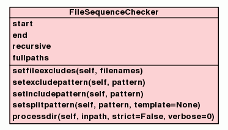

Class FileSequenceChecker
source code

FileSequenceChecker
A class for (recursively) checking a directory with file sequences
for missing files.
Modus Operandi
Processing happens in three steps:
-
Generate a directory contents dict by splitting each file name
into a name and sequence number part when generating lists for
each file sequence present in the dir. We sort these lists in a
natural way, first by sequence number, then by file name. This
step is also responsible for including or excluding files based
on criteria such as command line args
(
--include/--exclude) and/or FILEEXCLUDES.
For each directory a file name list is saved, containing dicts
with 5 keys:
-
file name (
filename),
-
sequence number (
seqnum),
-
file extension (incl. dot) (
fileext),
-
order (
order),
-
file name, 2nd part (optional) (
filename2)
The order ('normal' or 'reverse')
specifies which comes first: file name or sequence number.
A fifth key filename2 may exist which contains
the second filename part. If present this part will be
re-inserted again (appropriate to the order) when constructing
the missing file names as part of creating a missing files
series.
The order must be stored explicitly to be able to print
missing file names in a way directly relating to the first file
in the sequence.
It is also worth noting that self.start and self.end do NOT play an important role
here. The constraining to files within a particular start and end
interval is utilized and verified later within the comparing
function.
-
Iterate over the prepared directory contents and from each file
name list pass dicts representing current file name parts and
next file name parts to a comparing function.
By comparing clues from both dictionaries we can determine if
files are missing and how many. Lists with missing file names are
created on a per directory basis. Each list is then added to a
dictionary, keyed by path to the directory that's currently
processed.
-
self.processdir() returns this dictionary, or an
empty dictionary if no there are no missing files, so that the
caller can further do her own processing.
Caveats
Even after careful testing and development, there are still some
caveats left. These are mostly coming from not being able to do
everything automatically and then hide it away as implementation
detail, especially when faced with inherent ambiguities.
For example: certain file names are just not distuingishable
enough to match one default regex pattern over the other. This is
because from a regex based matching perspective strings like
v105-name and name-v105 are just too
similar. Think about it: to match the first string you could say:
match any lowercase letter followed by a number.
But can you be sure that you will always need to match just one
lowercase letter? I would argue you can't. Then you say: match any
lowercase letter any number of times followed by a number. If you now
compare this with the second string you will find that this
definition will match both strings. Of course you can mess around
with "rooting" to different sides of the string
(^ vs. $) and also impose a superficial
ordering of less-likely to likely when applying different patterns,
but fundamentally there will always be a at least one case that is
too ambiguous compared to another case.
Ambiguities like these are hard to resolve by automation. Any good
API will defer these decisions to the user of the class and thus
delegate the choice to the one who should know most about specific
needs.
In the case of the CLI that FileSequenceChecker was originally made for, command
line arguments give the end user the ability to define a pattern and
a replacement template themselves, so as to cater to these special
cases.
Example Use
The following example recursively processes some directory and
only looks at files from a file sequence which have sequence numbers
within the range 0 through 10.
>>> somedir = 'unittests/data/reverse_order'
>>> fsc = FileSequenceChecker(0, 10)
>>> missing = fsc.processdir(somedir)
>>> if len(missing) > 0:
... for containingdir, missingfiles in missing.items():
... print u"In '%s':" % containingdir
... for missingfile in missingfiles:
... print u" Missing %s" % missingfile
In 'unittests/data/reverse_order':
Missing 2 Write30.png
Missing 4 Write30.png
Missing 5 Write30.png
A FileSequenceChecker instance is key subscriptable.
If the instance's missing attribute (a dict with the
pathnames for dirs with missing files as keys) has an entry for a
given path it will return a list of file names for all missing files
under that path. E.g.:
>>> print fsc[somedir]
[u'2 Write30.png', u'4 Write30.png', u'5 Write30.png']
You can also ask a FileSequenceChecker instance for the total amount of
missing files detected:
>>> print fsc.totalfiles
3
If you want to know how many dirs there were with missing
files:
>>> print fsc.totaldirs
1
You can get the amount of time in fractional seconds that self.processdir() took by calling
fsc.lastexectime and it will return it as a
float value.
Implementation Notes
As this class has Sequence in its name, a strong case was
made initially when designing the class, for making it into an
iterable object, which, for example, would then support Pythonic
syntax facilities such as slice notation among others. In other
words: to treat the FileSequenceChecker as a sequence-like proxy object
that would delegate all the functionality that's required for the
problem domain of the CLI implementation to standard Python sequence
objects like lists, tuples etc.
However, this approach would have required to split the
responsibilities of FileSequenceChecker into at least two classes:
a FileSequence object that has information only about
the validity of the paths making up one particular file sequence and
also stores cross-referenced information about the parts that make up
each file name in that sequence, and a DirectoryParser
object that builds a list of file sequence candidates for processing
later on.
For each encountered file sequence from this previously created,
and thus pre-filtered directory list, one FileSequence
object is created and iterated upon. This iterating cycle would then
perform calulation of all missing file names in the same way as done
currently in the comparing function.
While this approach has some elegance to it, from a GTD
perspective of creating a command line tool for a specific purpose,
the 'divide et impera' approach was abandoned in favour of a
one-class-fits-all design.
This was also helped by the fact that it became apparent pretty
early that there would not be much need for things like slice
notation and most internal micro problems could be handled by
utilizing standard Python types.
|
|
__init__(self,
start=None,
end=None,
recursive=False,
fullpaths=False)
x.__init__(...) initializes x; see x.__class__.__doc__ for signature |
source code
|
|
|
|
|
|
|
|
|
|
|
|
|
|
|
|
|
|
|
|
|
|
|
|
|
|
|
|
setincludepattern(self,
pattern)
Only paths matching this regex pattern will be evaluated. |
source code
|
|
|
|
setsplitpattern(self,
pattern,
template=None)
Set the regex pattern that will split the file name into name and
sequence number parts. |
source code
|
|
|
|
reset(self)
Reset the comparance variables to their initial state. |
source code
|
|
dict or None
|
|
|
|
preparedircontents(self,
inpath,
verbose=0)
Prepare self.dircontents to contain directory contents
in lists, sorted naturally-like: first by sequence number then
alphabetically by file name. |
source code
|
|
bool
|
comparefile(self,
dir,
curfilenameparts,
nextfilenameparts,
verbose=0)
Compare one file with the next file in the sequence. |
source code
|
|
dict
|
processdir(self,
inpath,
strict=False,
verbose=0)
Main entry method: process the contents of a directory. |
source code
|
|
|
Inherited from object:
__delattr__,
__format__,
__getattribute__,
__hash__,
__new__,
__reduce__,
__reduce_ex__,
__setattr__,
__sizeof__,
__subclasshook__
|
|
|
SPLITPAT = [{'order': 'reverse', 'pattern': re.compile(r'(?x)^...
default split patterns
|
|
|
FILEEXCLUDES = ['.DS_Store', '.Spotlight-V100', '.Trashes', '.... |
|
|
__all__ = ['setfileexcludes', 'setincludepattern', 'setexclude... |
|
|
start
only process files with sequence number values greater than this
number
|
|
|
end
only process files with sequence number values less than or equal to
this number
|
|
|
recursive
process sub directories
|
|
|
fullpaths
index missing file lists by absolute paths instead of relative paths
|
|
Inherited from object:
__class__
|
__init__(self,
start=None,
end=None,
recursive=False,
fullpaths=False)
(Constructor)
| source code
|
x.__init__(...) initializes x; see x.__class__.__doc__ for
signature
- Overrides:
object.__init__
- (inherited documentation)
|
__str__(self)
(Informal representation operator)
| source code
|
str(x)
- Overrides:
object.__str__
- (inherited documentation)
|
|
repr(x)
- Overrides:
object.__repr__
- (inherited documentation)
|
|
Set a list of file names to be excluded from being evaluated.
Often these are hidden or system files, like .DS_Store on
a Mac or Thumbs.db on a Windows PC for example.
- Parameters:
filenames (list) - a list of file names
|
|
Paths matching this pattern will be excluded from being evaluated,
e.g. not included in the prepared directory contents.
- Parameters:
pattern (regex) - a regex pattern
Note:
excluding has precedence over including.
|
setsplitpattern(self,
pattern,
template=None)
| source code
|
Set the regex pattern that will split the file name into name and
sequence number parts.
Must contain two named groups: filename and
seqnum where the first should match the file name part and
the second should match the sequence number part. Can optionally contain
a third named groupd filename2 for cases where the sequence
number splits the filename in half.
If a custom pattern is supplied as raw unicode string, template
cannot be None.
- Parameters:
pattern (list of unicode or unicode) - a list of unicode regex patterns or a unicode string to be used
as the regex pattern.template (unicode) - format string with dict-based replacement tokens (e.g.
%s(<key_name>)s) that correspond to the
named groups given in the pattern. Must not be None
if pattern is of type unicode! - Raises:
ValueError - if the regex pattern doesn't contain one named regex group called
filename and one named group called
seqnum.
Note:
will attempt to sanitize the pattern, for example by doing things
like chopping off single and double quotation marks (if present) at
the beginning and end of the pattern string.
|
|
Using self.splitpat split the filename into filename and seqnum
part.
self.splitpat can be of type list or of type unicode raw
string. The list form should contain unicode raw string patterns in
reverse order of likely occurrence. The direct unicode raw string pattern
form is there to facilitate to ability for the command line user to
supply a pattern in a command line argument.
Internally the list form is the default and will see each pattern used
to perform a match so that more file sequence naming cases can be covered
– especially when multiple differently named file sequences co-exist in
the same directory.
- Parameters:
filename (unicode) - unicode string representing the file name - Returns:
dict or None
- dictionary with three entries: a file name
(
filename), a sequence number (seqnum)
and an order (order), where reverse order is seqnum
then filename and normal order is filename then seqnum.
- Raises:
TypeError - if self.splitpat is not of type unicode
or list.ValueError - When self.splitpat is of type unicode and
an order can not be inferred by parsing the pattern and looking for
what the ordering is between both named groups.
Note:
May return None if no match could be made so that an
enclosing loop can know when to continue.
|
preparedircontents(self,
inpath,
verbose=0)
| source code
|
Prepare self.dircontents to contain directory contents in
lists, sorted naturally-like: first by sequence number then
alphabetically by file name.
Given a filepath get the directory contents, split each file into
filename part(s) and a sequence number using self.splitpat
(either as pattern list or pattern itsel) and put each directory and it's
contents as a sorted list into self.dircontents, keyed by
the directory's file path.
- Parameters:
inpath (unicode) - a unicode file path stringverbose (int) - print informational messages to stdout, like when a
file name is excluded because its file path matched the exclude
pattern. - Raises:
ValueError - if the inpath doesn't exist or if inpath
is not a directory.
|
comparefile(self,
dir,
curfilenameparts,
nextfilenameparts,
verbose=0)
| source code
|
Compare one file with the next file in the sequence.
This method is called during processing of the loop which iterates
over all file sequences.
Compares self.lastfilebarename and
self.nextseqnum to the current filebarename and
iseqnum (int converted from seqnum) and if
self.nextseqnum is smaller than iseqnum + 1,
calulcates the range of the missing files and appends it as
list of unicode to the
self.missing dictionary.
- Parameters:
dir (unicode) - the path to the currently processed directory.curfilenameparts (dict) - file name, sequence number, file extension and order of the
current file.nextfilenameparts (dict) - file name, sequence number, file extension and order of the
next file.verbose (int) - include verbose output. - Returns:
bool
- False if enclosing caller loop should break. True if enclosing
caller loop should continue.
Note:
current and next are not neccessarily referring to
files from the same file sequence they may also be from different
file sequences, signaling the current file will be the last of its
sequence.
|
processdir(self,
inpath,
strict=False,
verbose=0)
| source code
|
Main entry method: process the contents of a directory.
- Parameters:
inpath (unicode) - the file path to a directory to process.strict (bool) - use re.match instead of re.search for splitting the file nameverbose (int) - print informational messages. - Returns:
dict
- dictionary with missing files. Contains as keys paths to
directories with missing files. Each path key contains as its
value a list of missing unicode file names. If there are no
missing files, returns an empty dictionary.
- Raises:
ValueError - if the directory at inpath doesn't exist.
|
FILEEXCLUDES
- Value:
['.DS_Store',
'.Spotlight-V100',
'.Trashes',
'.com.apple.timemachine.supported',
'.fseventsd',
'.syncinfo',
'.TemporaryItems',
'Desktop DF',
...
|
|
__all__
- Value:
['setfileexcludes',
'setincludepattern',
'setexcludepattern',
'setsplitpattern',
'processdir']
|
|